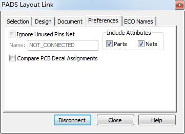
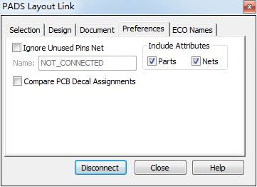
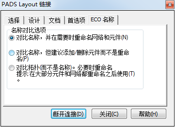

20160302
工程更改(Engineening Change Order)
>Tools / Layout Link...
选择(Selection)
")
")
设计(Design)
")
")
比较PCB(Compare PCB) : 比较原理图和PCB之间的差异
同步ECO至PCB(ECO To PCB) : 将原理图所做的更改同步更新到PCB
同步PCB至ECO(ECO From PCB) : 将PCB所做的更改同步更新到原理图
首选项(Preferences)
") 

ECO名称(ECO Names)

")
Layout / ECO工具栏
在Layout修改后，再将ECO文件导入Logic